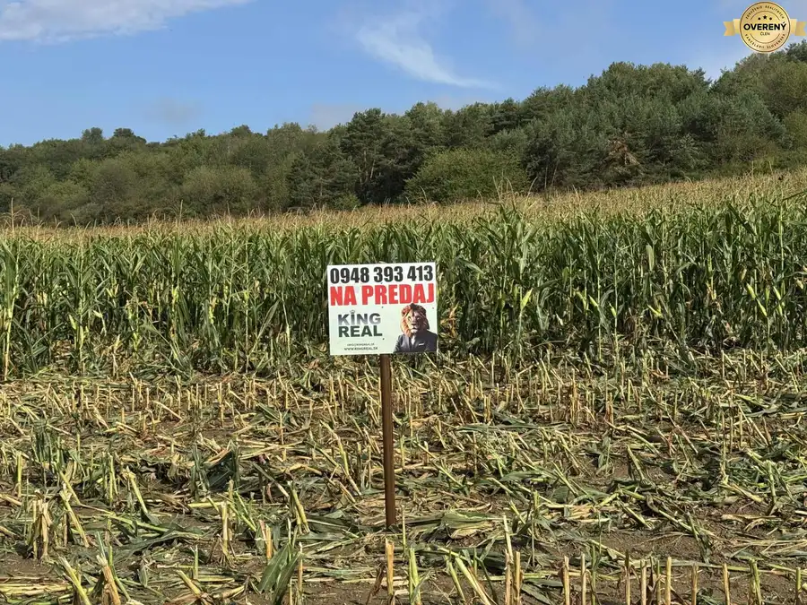
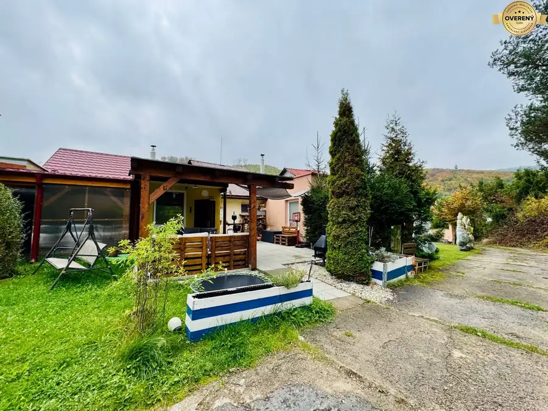

Na predaj stav. pozemok, Biel, Trebišov / Építési telek eladó, Bély
Biel
- Plocha2078 m²
- Vlastníctvoosobné
O nehnuteľnosti
KING REAL Vám exkluzívne ponúka na PREDAJ veľký stavebný pozemok v obci Biel.
Jeho nesporným plusom je, že sa nachádza v tesnej blízkosti dvoch miest. Od Kráľovského Chlmca je vzdialený 19 minút a od Čiernej nad Tisou iba 5 minút autom, alebo aj autobusom.
Veľkou výhodou je aj blízkosť okresného mesta Trebišov a priame vlakové spojenie s metropolou východu, s Košicami.
3D obhliadka: https://livetour.istaging.com/e6a2da-a36f-d8c8f7867f09?index=1
Videoobhliadka: https://youtu.be/ARwUlzOM0KA
Pozemok je slnečný a rovinatý, v strednej časti mierne vyvýšený, s krásnym výhľadom na okolie a má rozlohu 2.078 m². Jeho rozmery sú 18,5 x 110 m a je k nemu výborný prístup po novej asfaltovej ceste. Je samozrejme zahrnutý v územnom pláne obce. Z prednej strany je oplotený s možnosťou vstupu cez malú bránu a autom aj cez veľkú bránu. Z pravej a ľavej strany susedí pozemok s priateľskými susedmi a vďaka veľkej rozlohe, nájdete v jeho zadnej časti dostatok vlastného súkromia.
Kompletné inžinierske siete (elektrika, voda, plyn, kanalizácia) sú priamo pri pozemku a vlastná studňa je už na ňom. Obec je bez neprispôsobivých občanov a ponúka dobrú občiansku vybavenosť.
Tento pozemok je ideálnym riešením ak chcete žiť mimo mesta ale zároveň v jeho blízkosti, navyše štedrá rozloha ponúka jeho rôznorodé využitie. Okrem domu sa na neho pokojne zmestí napríklad bazén, sauna, detské preliezačky, veľká záhrada, alebo aj ovocný sad.
V prípade, že chcete nechať stavbu rodinného domu na odborníkov, KING REAL je tu pre Vás. Naša vlastná stavebná firma sa venuje výstavbe murovaných rodinných domov od roku 2017 a za ten čas sme ich úspešne postavili a odovzdali desiatky.
Info: www.kingreal.sk/developerske-projekty
Cena pozemku v RK.
V nej je už zahrnutý kompletný realitný servis, hypotekárne a právne poradenstvo, až po jeho odovzdanie.
Pre ďalšie informácie ma neváhajte kedykoľvek kontaktovať:
Erik Martoncsík
Parametre
| Rozloha pozemku | 2078 m² |
|---|---|
| Vlastníctvo | osobné |
| Odvoz odpadu | áno |
| Voda | studňa a vodovod |
| El. napätie | 230V |
| Plyn | áno |
| Kanalizácia | áno |
| Inžinierske siete | blízko |
| Orientácia | východ/západ |
| Terén | rovina |
| Prístupová cesta | asfaltová cesta |
| Pripravené na výstavbu | schválené v územnom pláne |
| Dátum zverejnenia | 4. 7. 2025 |
Kde to je
Mohlo by Vás zaujímať
 Pozemok10
2 078 €Na predaj stavebný pozemok, Biel, Trebišov
Biel
2078 m²
KING REAL Vám exkluzívne ponúka na PREDAJ veľký stavebný pozemok v obci Biel. Jeho nesporným plusom je, že sa nachádza v tesnej blízkosti dvoch…
Pozemok10
2 078 €Na predaj stavebný pozemok, Biel, Trebišov
Biel
2078 m²
KING REAL Vám exkluzívne ponúka na PREDAJ veľký stavebný pozemok v obci Biel. Jeho nesporným plusom je, že sa nachádza v tesnej blízkosti dvoch…

Developerské projekty9 400 000 €● ZNÍŽENÁ CENA ● Na predaj investičný pozemok, Záhradné, Prešov Záhradné 26088 m² KING REAL Vám exkluzívne ponúka na PREDAJ veľký, investičný pozemok v obci Záhradné. Jeho veľkou výhodou je, že sa nachádza na okraji vyhľadávanej…
Chaty a chalupy10 99 000 €● ZNÍŽENÁ CENA ● Na predaj rekreačná chata s pozemkom, Domaša, Valkov Bžany 3-izbový80 m² KING REAL Vám exkluzívne ponúka na PREDAJ celoročne obývateľnú, murovanú chatu s pozemkom v rekreačnej oblasti Valkov pri vyhľadávanej vodnej nádrži…